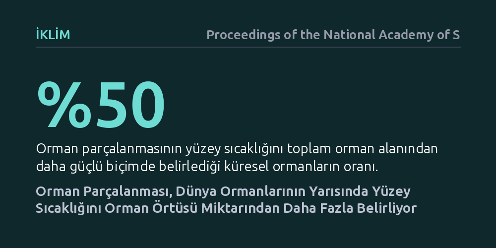

IKLIM · Proceedings of the National Academy of Sciences · 2026-10-12
Araştırma, orman parçalanmasının arazi yüzey sıcaklığı üzerindeki etkisini toplam orman alanıyla karşılaştırarak inceledi. Bulgular, küresel ormanların yarısında yüzey sıcaklığını belirlemede ormanların bölünmüşlüğünün toplam orman örtüsünden daha baskın olduğunu ortaya koydu.
Sadece ağaç dikmenin veya mevcut orman alanını korumanın yetmediğini, ormanların mekânsal bütünlüğünü korumadan yerel ısınmanın engellenemeyeceğini gösteriyor.

İklim değişikliğiyle mücadele politikaları uzun süredir neredeyse tamamen tek bir göstergeye odaklanıyor: toplam orman varlığı. Kaç hektar ormanın yok edildiği veya kaç milyon yeni fidan dikildiği uluslararası iklim zirvelerinin ana gündem maddesi oluyor. Ancak ormanların yekpare bir blok halinde mi kaldığı yoksa yollar, tarım arazileri ve insan yerleşimleriyle bölünüp küçük parçalara mı ayrıldığı konusu iklim planlarında genellikle göz ardı ediliyor.
Ormanların bölünmesi, kenar hatlarını artırarak orman içi mikroklimayı bozar. Rüzgar, doğrudan güneş ışığı ve kuruluk ağaçların iç kısımlarına kadar sokulur. Bu durum bilim insanlarının aklına temel bir soruyu getiriyor: Sadece orman miktarını korumak yerel sıcaklık artışını önlemeye yeter mi, yoksa ormanların parçalanması sıcaklık üzerinde orman alanından bile daha güçlü bir etkiye sahip olabilir mi?
Araştırmacılar bu soruyu yanıtlamak için gezegenin tamamındaki ormanları kapsayan yüksek çözünürlüklü uydu verilerini ve arazi yüzey sıcaklığı ölçümlerini mercek altına aldı. Orman alanlarının sadece büyüklüğü değil, mekânsal dağılımı, parça büyüklükleri ve kenar yoğunlukları ileri mekânsal modelleme teknikleriyle küresel ölçekte haritalandırıldı.
Çalışmada kullanılan yöntem, uydu kaynaklı yüzey sıcaklığı kayıtları ile buharlaşma-terleme dinamiklerini bir araya getirdi. Böylece araştırmacılar, orman örtüsündeki net değişim ile parçalanma derecesinin yerel yüzey sıcaklığı üzerindeki bağımsız etkilerini dünya çapında birbirlerinden ayrıştırarak doğrudan karşılaştırma fırsatı buldu.
Analiz sonuçları, dünya ormanlarının yaklaşık yarısında parçalanmanın arazi yüzey sıcaklığı üzerindeki etkisinin toplam orman örtüsü miktarından daha baskın olduğunu ortaya koydu. Yani pek çok coğrafyada ne kadar çok ağacınız olduğundan ziyade, bu ağaçların ne kadar parçalanmış olduğu yüzey sıcaklığını daha kuvvetli biçimde tayin ediyor.
Bütünlüğünü kaybetmiş ve kenar etkisi altına girmiş orman parçaları, beklenen serinletici işlevi yerine getiremiyor. Orman kenarlarındaki artan buharlaşma stresi ve kuruluk, yüzey sıcaklıklarının yükselmesine yol açarak ormanın yerel iklim üzerindeki doğal tamponlama ve soğutma gücünü ciddi biçimde zayıflatıyor.
Bu bulgu, mevcut iklim azaltım ve orman koruma stratejilerinin baştan sona gözden geçirilmesi gerektiğini gösteriyor. Salt dikilen fidan sayısına veya korunan hektar miktarına odaklanıp ormanların altyapı projeleriyle delik deşik edilmesine göz yummak, yerel ısınmayı dizginlemek için yetersiz kalıyor.
Gelecekteki koruma ve restorasyon politikalarının yeşil koridorlar inşa ederek parçalanmış orman adalarını birbirine bağlaması ve mevcut büyük orman bloklarının bölünmesini engellemesi gerekiyor. Gerçek bir iklim faydası elde edebilmek için ormanın yalnızca alanını değil, mekânsal dokusunu ve yapısal bütünlüğünü de savunmak şart.